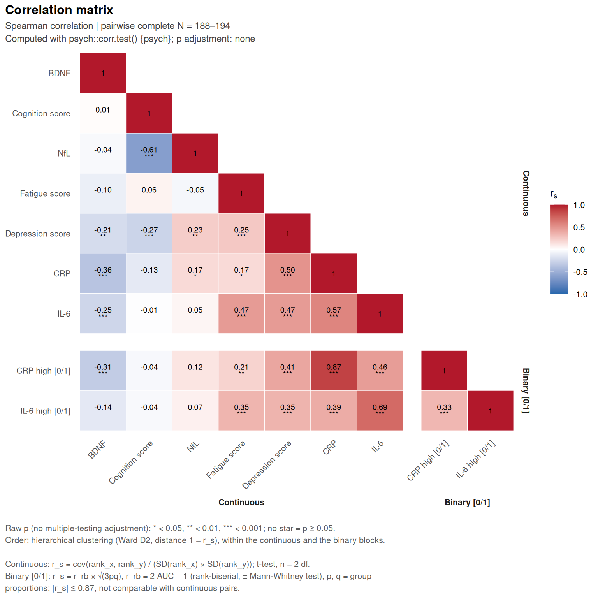

library(corrkit)
d <- simulate_cor_data(n = 200) # biomarqueurs, scores et covariables simulés
lab <- attr(d, "labels") # libellés des variablesPrise en main
Tout corrkit part d’un seul objet : le résultat de cor_test_matrix(). Il contient les coefficients, les p-values, les effectifs et les intervalles de confiance de toutes les paires de variables. Les graphiques et les tableaux ne font que le mettre en forme.
Calculer toutes les corrélations
vars <- c("CRP", "IL6", "BDNF", "NfL", "depression", "fatigue", "cognition", "BIN_CRP", "BIN_IL6")
cm <- cor_test_matrix(d, vars, method = "spearman")
cm
#> <cor_matrix> Spearman correlations, 9 variables (2 binary), 36 pairs
#> engine: psych::corr.test() {psych} | raw p-values (no adjustment) | N = 188–194
#> CRP IL6 BDNF NfL depression fatigue cognition
#> CRP 1
#> IL6 0.57*** 1
#> BDNF -0.36*** -0.25*** 1
#> NfL 0.17* 0.05 -0.04 1
#> depression 0.50*** 0.47*** -0.21** 0.23** 1
#> fatigue 0.17* 0.47*** -0.10 -0.05 0.25*** 1
#> cognition -0.13 -0.01 0.01 -0.61*** -0.27*** 0.06 1
#> BIN_CRP 0.87*** 0.46*** -0.31*** 0.12 0.41*** 0.21** -0.04
#> BIN_IL6 0.39*** 0.69*** -0.14 0.07 0.35*** 0.35*** -0.04
#> BIN_CRP BIN_IL6
#> CRP
#> IL6
#> BDNF
#> NfL
#> depression
#> fatigue
#> cognition
#> BIN_CRP 1
#> BIN_IL6 0.33*** 1
NoteRéglages par défaut
Corrélation de Spearman, observations complètes paire par paire, p-values brutes (aucun ajustement pour tests multiples, voir Corrections pour tests multiples), intervalles de confiance à 95 %. Les étoiles se lisent : * p < 0,05, ** p < 0,01, *** p < 0,001.
Ce que contient le résultat
La matrice des coefficients, symétrique, avec 1 sur la diagonale.
round(cm$r, 2)
#> CRP IL6 BDNF NfL depression fatigue cognition BIN_CRP BIN_IL6
#> CRP 1.00 0.57 -0.36 0.17 0.50 0.17 -0.13 0.87 0.39
#> IL6 0.57 1.00 -0.25 0.05 0.47 0.47 -0.01 0.46 0.69
#> BDNF -0.36 -0.25 1.00 -0.04 -0.21 -0.10 0.01 -0.31 -0.14
#> NfL 0.17 0.05 -0.04 1.00 0.23 -0.05 -0.61 0.12 0.07
#> depression 0.50 0.47 -0.21 0.23 1.00 0.25 -0.27 0.41 0.35
#> fatigue 0.17 0.47 -0.10 -0.05 0.25 1.00 0.06 0.21 0.35
#> cognition -0.13 -0.01 0.01 -0.61 -0.27 0.06 1.00 -0.04 -0.04
#> BIN_CRP 0.87 0.46 -0.31 0.12 0.41 0.21 -0.04 1.00 0.33
#> BIN_IL6 0.39 0.69 -0.14 0.07 0.35 0.35 -0.04 0.33 1.00Les p-values brutes du test de chaque coefficient ($p_adj contient les p-values ajustées ; elles sont égales à $p quand p_adjust = "none").
signif(cm$p, 2)
#> CRP IL6 BDNF NfL depression fatigue cognition BIN_CRP
#> CRP 0.0e+00 1.6e-17 3.3e-07 1.8e-02 1.9e-13 1.9e-02 6.9e-02 1.1e-59
#> IL6 1.6e-17 0.0e+00 6.0e-04 5.1e-01 1.6e-11 1.4e-11 8.9e-01 3.4e-11
#> BDNF 3.3e-07 6.0e-04 0.0e+00 6.3e-01 3.3e-03 1.8e-01 8.4e-01 1.3e-05
#> NfL 1.8e-02 5.1e-01 6.3e-01 0.0e+00 1.3e-03 4.9e-01 2.3e-20 9.4e-02
#> depression 1.9e-13 1.6e-11 3.3e-03 1.3e-03 0.0e+00 4.2e-04 2.4e-04 3.4e-09
#> fatigue 1.9e-02 1.4e-11 1.8e-01 4.9e-01 4.2e-04 0.0e+00 4.3e-01 4.7e-03
#> cognition 6.9e-02 8.9e-01 8.4e-01 2.3e-20 2.4e-04 4.3e-01 0.0e+00 5.8e-01
#> BIN_CRP 1.1e-59 3.4e-11 1.3e-05 9.4e-02 3.4e-09 4.7e-03 5.8e-01 0.0e+00
#> BIN_IL6 3.4e-08 3.2e-29 5.8e-02 3.5e-01 7.5e-07 1.1e-06 6.1e-01 2.7e-06
#> BIN_IL6
#> CRP 3.4e-08
#> IL6 3.2e-29
#> BDNF 5.8e-02
#> NfL 3.5e-01
#> depression 7.5e-07
#> fatigue 1.1e-06
#> cognition 6.1e-01
#> BIN_CRP 2.7e-06
#> BIN_IL6 0.0e+00Le nombre d’individus utilisés pour chaque paire : il varie avec les valeurs manquantes.
cm$n
#> CRP IL6 BDNF NfL depression fatigue cognition BIN_CRP BIN_IL6
#> CRP 194 188 188 188 188 188 188 194 188
#> IL6 188 194 188 188 188 189 188 188 194
#> BDNF 188 188 194 189 188 189 188 188 188
#> NfL 188 188 189 194 188 189 188 188 188
#> depression 188 188 188 188 194 188 188 188 188
#> fatigue 188 189 189 189 188 194 188 188 189
#> cognition 188 188 188 188 188 188 194 188 188
#> BIN_CRP 194 188 188 188 188 188 188 194 188
#> BIN_IL6 188 194 188 188 188 189 188 188 194Bornes de l’intervalle de confiance à 95 % de chaque coefficient (transformation z de Fisher).
round(cm$ci_low, 2)
#> CRP IL6 BDNF NfL depression fatigue cognition BIN_CRP BIN_IL6
#> CRP NA 0.46 -0.48 0.03 0.38 0.02 -0.27 0.82 0.26
#> IL6 0.46 NA -0.38 -0.10 0.34 0.34 -0.16 0.33 0.61
#> BDNF -0.48 -0.38 NA -0.18 -0.35 -0.24 -0.13 -0.44 -0.28
#> NfL 0.03 -0.10 -0.18 NA 0.09 -0.20 -0.69 -0.03 -0.08
#> depression 0.38 0.34 -0.35 0.09 NA 0.11 -0.40 0.28 0.22
#> fatigue 0.02 0.34 -0.24 -0.20 0.11 NA -0.09 0.06 0.21
#> cognition -0.27 -0.16 -0.13 -0.69 -0.40 -0.09 NA -0.19 -0.18
#> BIN_CRP 0.82 0.33 -0.44 -0.03 0.28 0.06 -0.19 NA 0.20
#> BIN_IL6 0.26 0.61 -0.28 -0.08 0.22 0.21 -0.18 0.20 NA
round(cm$ci_high, 2)
#> CRP IL6 BDNF NfL depression fatigue cognition BIN_CRP BIN_IL6
#> CRP NA 0.66 -0.23 0.31 0.61 0.31 0.01 0.90 0.51
#> IL6 0.66 NA -0.10 0.19 0.57 0.57 0.14 0.57 0.76
#> BDNF -0.23 -0.10 NA 0.11 -0.07 0.05 0.16 -0.17 0.01
#> NfL 0.31 0.19 0.11 NA 0.37 0.10 -0.51 0.26 0.21
#> depression 0.61 0.57 -0.07 0.37 NA 0.39 -0.12 0.53 0.47
#> fatigue 0.31 0.57 0.05 0.10 0.39 NA 0.20 0.34 0.47
#> cognition 0.01 0.14 0.16 -0.51 -0.12 0.20 NA 0.11 0.11
#> BIN_CRP 0.90 0.57 -0.17 0.26 0.53 0.34 0.11 NA 0.46
#> BIN_IL6 0.51 0.76 0.01 0.21 0.47 0.47 0.11 0.46 NAUne ligne par paire de variables : c’est le format le plus pratique pour filtrer, trier ou exporter.
head(as.data.frame(cm$long), 10)
#> Var1 Var2 type1 type2 r ci_low ci_high
#> 1 CRP IL6 continuous continuous 0.56897575 0.46026507 0.66087549
#> 2 CRP BDNF continuous continuous -0.36210257 -0.48359271 -0.22692414
#> 3 IL6 BDNF continuous continuous -0.24812481 -0.38146502 -0.10466940
#> 4 CRP NfL continuous continuous 0.17166756 0.02501970 0.31108281
#> 5 IL6 NfL continuous continuous 0.04837098 -0.09961916 0.19426744
#> 6 BDNF NfL continuous continuous -0.03552826 -0.18147094 0.11194568
#> 7 CRP depression continuous continuous 0.50289312 0.38405847 0.60533837
#> 8 IL6 depression continuous continuous 0.46594678 0.34214607 0.57384706
#> 9 BDNF depression continuous continuous -0.21317476 -0.34948268 -0.06803023
#> 10 NfL depression continuous continuous 0.23293694 0.08869952 0.36760590
#> p n p_adj
#> 1 1.613518e-17 188 1.613518e-17
#> 2 3.288137e-07 188 3.288137e-07
#> 3 5.963373e-04 188 5.963373e-04
#> 4 1.849267e-02 188 1.849267e-02
#> 5 5.097724e-01 188 5.097724e-01
#> 6 6.274310e-01 189 6.274310e-01
#> 7 1.917294e-13 188 1.917294e-13
#> 8 1.601954e-11 188 1.601954e-11
#> 9 3.311377e-03 188 3.311377e-03
#> 10 1.295666e-03 188 1.295666e-03Le type de chaque variable (les binaires sont traitées à part) et les paramètres du calcul, repris automatiquement dans les légendes.
cm$types
#> CRP IL6 BDNF NfL depression fatigue
#> "continuous" "continuous" "continuous" "continuous" "continuous" "continuous"
#> cognition BIN_CRP BIN_IL6
#> "continuous" "binary" "binary"
str(unclass(cm)[c("method", "engine", "p_adjust", "ci", "ci_engine")])
#> List of 5
#> $ method : chr "spearman"
#> $ engine : chr "psych::corr.test"
#> $ p_adjust : chr "none"
#> $ ci : num 0.95
#> $ ci_engine: chr "correlation::cor_to_ci"La matrice de corrélation
plot_cor_heatmap(cm, labels = lab)
- Sous-titre : méthode, effectif, fonction qui a fait le calcul.
- Cases : coefficient et étoiles ; couleur de −1 (bleu) à +1 (rouge).
-
Bloc du bas : les variables binaires
[0/1], dont le coefficient n’est pas sur la même échelle que celui des variables continues. - Légende : statut des p-values, ordre des variables, formule du coefficient et lecture des cases binaires.
Et ensuite
- Analyse complète d’une matrice : la même analyse en détail, avec les options de la heatmap et les tableaux ;
- Corrections pour tests multiples : quand et comment ajuster les p-values ;
- Comparer les coefficients : Pearson, Spearman, Kendall et les coefficients robustes ;
- Corrélations croisées et partielles : biomarqueurs × scores, corrélations partielles ;
- Variables binaires : variables binaires.